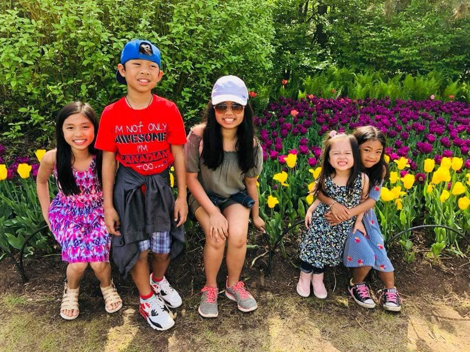
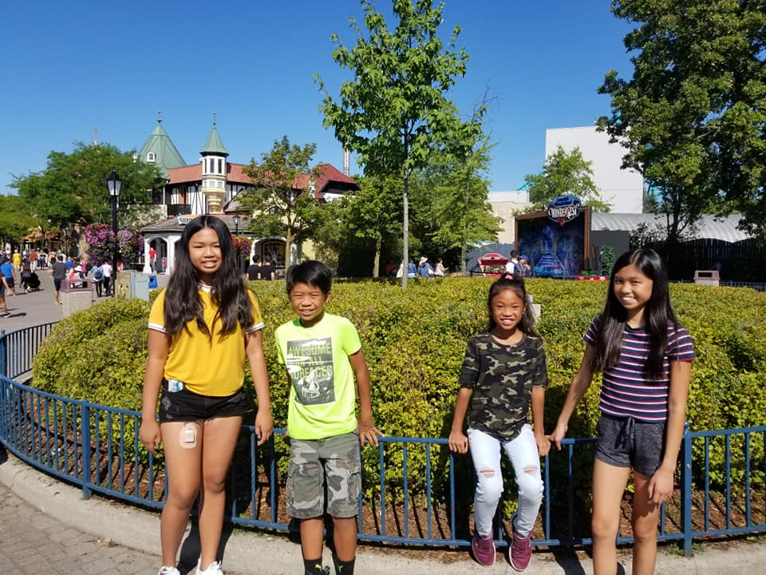
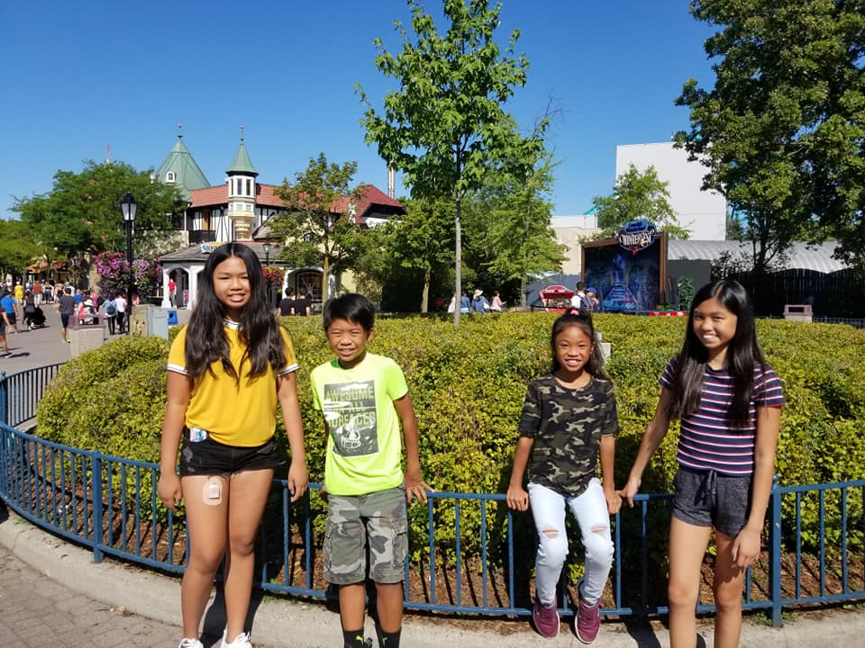

Surprisingly, I actually haven't travelled to very many places, especially not anywhere famous, which is weird since I have an entire page on it
but, I made this page so I could talk about all the fun places I've travelled to AND my experiences there.
The experiences is really where it's at. So, let's get started!
Boracay is a small island located somewhere in the middle section of the Philippines, called Visayas.
It's one of the most famous beach tourist spot in the country and around the world too which is why I was ecstatic when my dad said we'd be going there with extended family for summer vacation!
It's an island so as you can expect, it was very hard to get there. We had to go on a 40-minute plane ride from the city to the main island of Aklan,
then a 2-hour bus ride from the Aklan airport to the dock where we had to get on a 30-minute boat ride to get to the actual Boracay island
then finally, a 40-minute ride in a van from the dock to our hotel. You'd think we'd just fall on our hotel beds and sleep, right? No. We still went night-swimming.
Then the adults did adult-stuff at night while the kids hung out at the hotel with the nannies. We got room service for breakfast so that was fun!
The next day, we went on something called a "banana boat" ride where basically it's a large floatie where everyone sits on, then it gets pulled by a jetski really fast
but it's attached to a mechanism that just flips the floatie(and the people with it) upside down so that was an eventful hour.
But the fun wasn't over, after that, my aunt announced that we'd be going helmet diving!
My sister and my two younger cousins couldn't join us though since they were too young so they stayed behind with the nannies and they went shopping instead.
My dad, uncles, aunts and older cousins all rode a small boat to get to a small raft far from shore.
We were quickly given brief instructions and safety methods by the workers. Then they put these 16-pound helmets on our heads and just said it'd be lighter underwater!
Crazy. So, one-by-one, they took us down slowly to the sea floor which was 20m underwater. Only 5 of us actually ended up down there though, I think.
The others backed out or weren't able to handle the change in pressure. So, there I was, the youngest one at 9 years old with a 16-pound metal helmet on my head.
My aunt actually had to hold my helmet up for me or else it'd fall over. It might seem like I shouldn't but I had tons of fun on that trip.
A lot of fun. I'd 100% do it again!

Quebec!!! Going to Quebec was my first time outside of Ontario, even Toronto actually. My dad wasn't even licensed to drive yet so we couldn't really go anywhere.
My parents and sister rode with my aunt in their van while I rode with my other aunt in their car. It was a very, very long trip. I don't think I've ever been cooped up inside a car that long prior!
It was insane. Eventually we got there and it was amazing. We didn't really waste anytime resting. The itinerary they had planned out was packed.
We went to a museum first which was very cool, interesting and educational. I also loved reading all the French translations even if I couldn't understand them.
Then we went to some falls that I forgot the name of. That was also fun since we got to walk down these long flights of stairs to get near the bottom of the falls.
Then we spent the other days walking around, taking in the sights, eating at restaurants, etc.
Then we had to leave which was sad. I really wanted to spend more time there! But, we did do another stop before returning home.
We went to Ottawa! We saw the Parliament building which was absolutely majestic! Not going to lie, we took hundreds of pictures in front of it.
Then we saw the tulips! They were so pretty and I think I decided that moment that I would have tulips at my future house.
I'm not sure if I'll ever follow through with that plan. Anyways, we inevitably had to leave and go back to real life but those three days were definitely very memorable!
I'm not that sure if Canada's Wonderland counts as "travel" but I'm adding it in because it's a place that I went to and I'm definitely going to remember it for a long time!
Now, I've only ever been to Canada's Wonderland once in my life. Me, my mom, sister, aunt and cousins all went there one time during the summer and we spend every last second of it from opening to closing.
My cousins and I are just love the feeling of adrenaline. The surge, power and excitement you feel is unmatched. Especially with amusement/water park rides.
But, my youngest cousin, at least between the ones who were there, was too young to ride some of the more "adult" rides and my mom and aunt were too scared.
So it was up to me, my sister and my other cousin to ride every ride we could within that day. We zipped through the park that day, riding everything and coming out with an argument on who gets to tell the adults how cool the ride was.
I swear, I think we talked our parents' ears off that day. But that's because it was actually really cool! We rode through all spinning rides, tall rides, everything!
An important highlight though is on the Drop Tower. My youngest cousin wasn't allowed on the ride but to her, that was a relief.
We went on it as the last ride of the day which meant it was nighttime which also meant that it was that much scarier since you can barely see the top.
My grandparents from the Philippines also coincidentally facetimed my mom while my sister, cousin and I were getting strapped for the ride.
For some reason, they sounded more terrified than we did. To ber fair, my cousins and I agreed that whoever shows the least fear throughout all the rides would get bragging rights.
The ride finally started going up and after a few minutes, it just stops and I realize we were at the top. Before I could fully digest that though, we just drop.
Straight down. Just drop. It was totally terrifying!! But I am going to say, I would definitely do it again, without a doubt. Here's some pictures from that day.

 

|